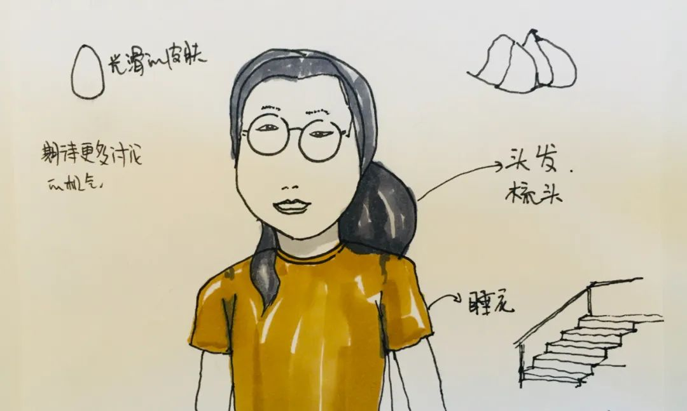

编辑/插图 ｜台风
特别感谢 | paper，北风儿，紫叶
要白，要瘦，要有一双大眼睛，睫毛要长，锁骨要明显，腰要纤细，腿要又直又长……我们什么时候开始在意自己的长相？为什么我们总对自己的外貌不满意？这是否造成了我们的困扰？我们如何处理这些纠结？6月13日，「大队茶话会」的第一期活动是外貌焦虑，我们一起讨论了上面这些问题。芋圆记得，上小学时有男同学讨论女生的身材。也许是从那时起，她开始在意自己的外貌。她现在在做力量型运动，身上有肌肉。她对自己的身材很满意，但总被人询问：「你怎么又壮了？」鱿人身高1米7，体重90斤，「是符合主流审美的标准身材」。在高中长高了20厘米后，突然有人对她说「你很漂亮」。在大学期间，当她吃得多时，朋友说：「你吃那么多不长肉，是浪费粮食」。随着年龄变大，她开始听到有长辈说她不适合结婚，因为太瘦了。
有一段时间，舒曦的体重增加了20斤。她免不了被人问，怎么长胖了。也许其他人希望她瘦一些，但其实她希望自己壮一点。Angle也面对过类似的状况：「你脸又圆了」，「你又长胖了」，「你怎么那么矮」。这些话语看似是表达关心，但实际上，他们并不在意她这段期间经历了什么。壮了、胖了、瘦了，什么样的体型都会被人讨论。人们似乎并不认为这已经越界，也不在乎这会让人不舒服。哪怕是对同一个人，人们也有不同的评价，其导向大多是「你哪里不够好」，而不是「你实在太好了」。我们很难去迎合每一个人的看法，但这些否定式的询问让人难免一次次地自我审视。
「有时看得出朋友穿的胸罩太大，不符合她的胸型。」阿宜说。虽然平胸女孩总说，胸小显高级、好穿搭，但还是会羡慕大胸的女生。比如说，很多女生穿厚胸罩。台风说，初高中时的胸罩是她妈买的，「总挑厚的、挺的」。大学之后，她自己去内衣店，店员推荐的也是聚拢型胸罩。店员还会直接进到试衣间，上手要帮她挤出乳沟。「在这种尴尬的情况下，不买不行。」笑笑在国外上学时，看到很多女生不穿胸罩坦然地走在路上，没有人会觉得奇怪。但在国内，不穿胸罩会被人盯着看。「比如下楼拿外卖、丢垃圾时，虽然时间很短，还是会穿上胸罩，或者多穿一条外套。」对她来说，穿胸罩是为了避免男性不怀好意的注视。有人说，「让自己显得丰满，是为了迎合大众审美，增加自己的性魅力，但我自己一点也不舒服。」2015年，台风认识了很多女权朋友。她们展开了各种各样对身体的讨论。她才发现，原来女生不穿胸罩也可以。大家总在找让自己舒服的方式。

sacha说，她最不满意的是「大鼻头」，这让她显得可爱，但她希望自己看起来成熟一些。芋圆上大学时，因为不适应环境和饮食，脸上长了很多痘痘。她对痘痘不满意。舒曦最困扰的是，这些烦恼一般只能和家人说，其它诉说渠道比较缺乏。看不见衣服和发型的改变，却挑剔连我们自己都难以察觉的“缺陷”指指点点的社会，总会让我们不断否定自己，瞻前顾后中，和社会的步调脱节。二十岁、三十岁还在思考的问题，似乎男性从来不需要思考。我们好像离真正洒脱无惧还都很远，大家一起加油吧～
不同的外貌焦虑，别人的焦虑可能在某些人看来反而是想得到的，郭晶总结得很好，而这些焦虑的缘由并不是有一个统一的对女性的标准，而是因为社会对女性的苛责特别严格
坚持理性 坚持逻辑性思考 展现女性内生性气质 影响别人对她的认识 外貌就不会这么重要了
外貌焦虑常常和其它困扰交织在一起，例如职业、父母、婚育等等。女性普遍存在着外貌焦虑，这存在结构性的原因。我们会远离那些让产生焦虑的因素，探索新的可能性，建立新的社会关系。不存在完美的人，所以我们总对自己的外貌感到不满。庆幸的是，我们始终在寻找接纳自己的方式，找到自己的价值，降低外貌对我们的影响，减少焦虑。
「大队茶话会」是基于网络的讨论会，参与者是支持就业性别歧视大队的朋友们，主题是我们共同关心的性别话题。我们在微博、微信有很多讨论，但文字是一种限制。我们希望讨论延展得更深一点，面对面的直接表达各自的观点和经历。有兴趣参与的朋友，请发送「本人微信号+茶话会」至公众号后台，会有志愿者拉你入群。活动信息将在群内公开。